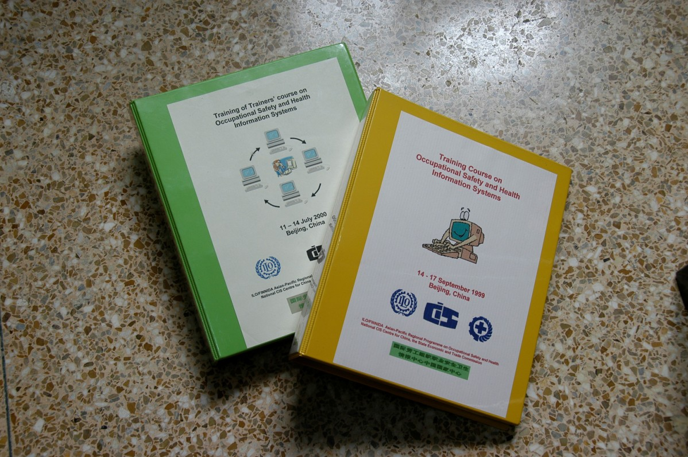
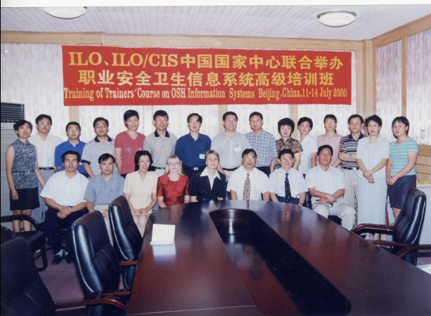
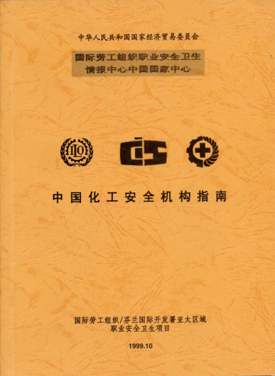

1992年，由芬兰政府资助的ILO／FINNIDA项目在亚太地区20个国家进行，其中包括：中国、印度、泰国、越南等。项目的主要目的是：
通过政府、雇主组织、工会组织以及其他非政府组织开展本国的职业安全卫生信息基础工作；促进各部门职业安全卫生工作的开展以及建立国家职业安全卫生信息网。
该项目主要通过以下活动加强职业安全卫生管理工作：
（1）创办亚太地区职业安全卫生网络，并连接到国际互联网国际劳工组织职业安全卫生情报中心（ILO-CIS Centers）上；
（2）建立国家职业安全卫生信息政策；
（3）在负责职业安全卫生工作和活动的政府部门，研究机构，及企、事业单位中建立国家级和地区性网络；
（4）逐步建立新的职业安全卫生信息部门，加强现有的信息基础工作，积极的促进信息传播；
（5）出版《亚太地区职业安全卫生通讯》；
（6）开发亚太地区职业安全卫生信息网站点，并在一些特定领域开发一些大家感兴趣的，使用又很方便的数据库；
（7）编辑职业安全卫生机构名录。、
此项目执行期间，ILO-CIS中国国家中心开展了以下工作：
◆ 职业安全卫生信息网络研讨、信息系统培训工作
1993年11月8 -10日，ILO／FINNIDA项目组、劳动部职业安全卫生监察局及ILO-CIS中国国家中心共同合作举办了首次中国职业安全卫生信息网络研讨会。参加本次研讨会的代表来自政府部门、研究机构、大专院校、工会组织和雇主组织。此次研讨会主要讨论在中国建立职业安全卫生信息网络，加强全社会在职业安全卫生领域的协作，实现职业安全卫生信息资源共享，最终服务于全社会，减少工伤事故与职业病，改善劳动者的工作条件。与会代表经过讨论，制订了中国职业安全卫生信息网的宗旨和原则，即：及时、有效、方便地为政府部门、工会组织、雇主组织和有关单位提供职业安全卫生信息，实现职业安全卫生信息资源的社会共享，促进中国的职业安全卫生工作。
1994年4月1日，由ILO/FINNIDA项目组与ILO-CIS中国国家中心共同组织的第二次中国职业安全卫生信息网络研讨会在北京召开。本次研讨会主要介绍了ILO/FINNIDA亚太区域职业安全卫生项目提供的数据库软件。目的在于通过数据库示例的演示及与会代表的上机操作，建立起网员名录，把各网员拥有的职业安全卫生信息资源整合起来，实现资源共享。
1994年10月10-12日，由ILO/FINNIDA项目组与ILO-CIS中国国家中心共同组织的第三次中国职业安全卫生信息网络研讨会在北京举行。参加会议的代表来自政府部门、研究机构、工会组织、大专院校等30家单位。会上介绍了ILO-CIS总部和ILO-CIS中国国家中心的概况；分析了中国职业安全卫生信息工作现状，交流了各行业、各部门对职业安全卫生信息需求的状况；讨论并修改了本中心编写的职业安全卫生信息需求调查表；研究并制定了中国职业安全卫生信息工作的发展战略。
1999年9月14-17日，国际劳工组织、国际劳工组织北京局和ILO-CIS中国国家中心共同举办了“职业安全卫生信息系统培训班”，来自ILO-CIS中国国家中心及其分中心从事职业安全卫生信息工作的人员参加了本次培训。

2000年7月11-14日，国际劳工组织、国际劳工组织北京局和ILO-CIS中国国家中心共同举办了“职业安全卫生信息系统高级培训班”。这次培训班与1999年9月培训班的内容有所不同，本期重点是培训中国职业安全卫生信息系统的培训师，目的是使这些培训师利用现有的职业安全卫生信息资源，特别是国际互联网，发展信息系统和完善服务。ILO-CIS中国国家中心及全国总工会职业安全卫生信息培训中心，煤炭安全信息与培训中心，建设部，卫生部及青岛职业安全卫生研究所等有关单位的人员参加了这次培训。
◆ 编写中国化工安全机构指南

1998年10月至1999年10月，ILO-CIS中国国家中心参与了ILO／FINNIDA项目的二期工作，编辑了《中国化工安全机构指南（中、英文版）》。本指南介绍了中国化工安全机构的概况，可供政府官员、进出口商、化学品的制造商和供应商、雇主代表和雇员代表、教育部门、国际组织以及研究机构及使用化学品的有关人员使用。旨在加强各部门的信息交流，有助于在作业场所采取预防措施，防止化学危害。
1998年底，在ILO／FINNIDA项目的支持和国际劳工组织职业安全卫生专家PiaMarkkanen女士帮助下，建立了“中国职业安全卫生信息网”（中、英文版，网址：www.cis-safety-inf.org.cnorwww.chinasafety.ac.cn）。该网站开设了国际劳工组织及ILO-CIS中国国家中心专栏，主要介绍了劳工简讯、劳工公约与建议书、职业安全卫生实用规程、ILO-CIS概况、ILO-CIS中国国家中心简介及其业务范围、出版物及职业安全卫生信息以及有关机构的友情链接等。目前，该网站还在不断建设中。
ILO-CIS中国国家中心作为亚太区域职业安全卫生信息网络的成员之一，积极地参与了亚太区域职业安全卫生信息传播的各项活动。
《亚太地区职业安全卫生通讯》是由国际劳工组织和芬兰职业卫生研究所共同出版的期刊。从1994年第一期创办以来，一直通过ILO-CIS中国国家中心免费发送到我国有关政府部门、科研单位、大专院校、职业安全卫生机构、工会组织和企业等。
《中国职业安全卫生信息简报》是由ILO-CIS中国国家中心在ILO／FINNIDA项目实施期间编辑出版的，向全国各地及时通报了该项目的最新信息及中国职业安全卫生信息网络建设的进展情况。
《〈安全生产周〉特刊》是ILO-CIS中国国家中心为配合“国家安全生产周”工作编辑出版的专刊。其内容涉及：全国安全生产情况通报，各国举办安全年、月、周活动简介，全国安全月、周活动回顾，介绍国内外重特大典型事故等内容。
1989年10月24-27日，ILO-CIS中国国家中心的代表杨乃莲女士参加了在日内瓦举办的化学品安全信息传播培训班。来自中国、澳大利亚、泰国、斯里兰卡、印度等国家的代表参加了此次培训。
1995年11月20-22日，ILO-CIS中国国家中心的代表向征女士参加了在曼谷召开的亚太地区国家职业安全卫生信息网规划协商会议。来自中国、澳大利亚、泰国、蒙古、斯里兰卡、印度等14个国家的代表参加了此次会议。会议就职业安全卫生信息网现状及展望、国家职业安全Gopher系统、各国职业安全卫生机构名录编辑等问题进行了讨论，并通过了亚太地区职业安全卫生信息网建设及未来发展的宣言。
1996年11月26-28日，ILO-CIS中国国家中心代表杨乃莲女士出席参加了在越南召开的国家职业安全卫生信息网负责人或项目负责人的年会，来自11个国家的14名代表参加了会议。本次会议对ILO／FINNIDA项目一期工作做了总结。
2000年6月20-21日，第38届ILO-CIS国家中心年会在爱尔兰召开，来自30多个ILO-CIS国家中心的代表参加了会议。在项目的资助下，ILO-CIS中国国家中心的孙连捷先生和杨乃莲女士出席了本次年会。